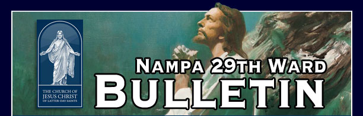
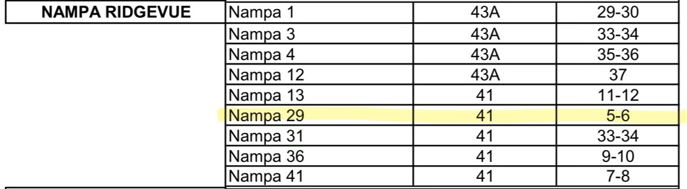
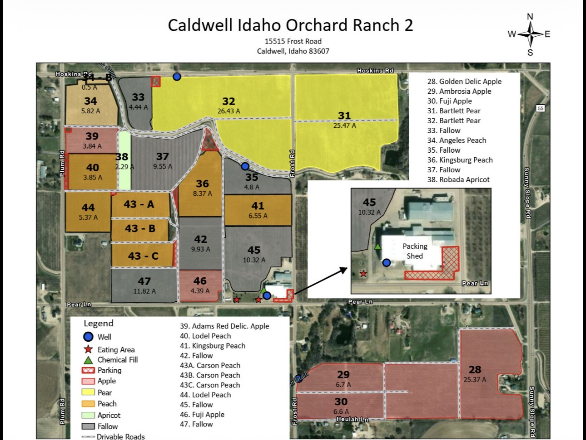
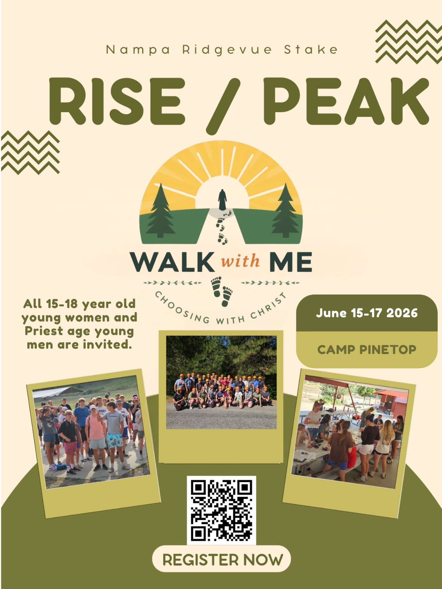

"I want you also to know that you are not alone. Heavenly Father knows you. He hears your prayers. He is aware of your every tear. He loves you with infinite love and watches over you. Even when you might feel you are alone, you are not because He is always there."
Dieter F. Uchtdorf
Remember He is in the details of our lives. We invite you to seek daily to see the hand of the Lord in your lives.
Visit our official WebsiteWard Website
July 25 is our Summer Ward BBQ. Click Here to get more info.
ORCHARD ASSIGNMENT
Tuesday night we will be gathering as families to finish our peach thinning assignment at the orchard. Plan to meet at the orchard at 6:30. Section 41 Rows 5-6. Contact Brother Morgan Pitcock if you need directions or have any questions.



May 31 - Fast Sunday and Special 2nd Hour Lesson.
As previously communicated from the First Presidency, all wards and branches in the United States are invited to discuss the importance of the Declaration of Independence and the Constitution during the fifth-Sunday meeting on May 31. The video and discussion guide for May 31 are now available at Church Jesus Christ.org.
Stake Conference June 6-7
Summer Youth Camps
Stake Rise & Peak - June 15-17 (for all youth turning 16 this year and older)
Stake Girls Camp - June 17-20 (for all young women: Believers of Faith, Messengers of Hope, and Gatherers of Light)
Stake Teachers and Deacons Camp - June 17 - 20 (for all deacons and teachers)
Click here to register
Ward Temple Night is the 7 p.m. endowment session on the 2nd Thursday of each month at the Meridian Temple unless noted otherwise.
If you are unable to make that session work we invite you to make time to be in the House of the Lord sometime that week.
Dates:
June 11 - Boise Temple
July 9
August 13
September 10
October 8
November 12 - Boise Temple
December 10
“Please make time for the Lord in His holy house. Nothing will strengthen your spiritual foundation like temple service and temple worship.” - Russell M. Nelson, Make Time for the Lord, October 2021
Please schedule a new appointment for each person needing an interview.
| Craig Hanks | Bishop | (208) 283-4939 |
| Justin Jesperson | Bishopric First Counselor | (619) 337-5983 |
| Skyler Steeves | Bishopric Second Counselor | (208) 871-9053 |
| Zach DeLarosa | Ward Executive Secretary | (208) 570-9363 |
| Tyler Gardner | Ward Assistant Executive Secretary | (208) 800-7058 |
| Ray Miles | Ward Clerk | (208) 880-3237 |
| Benjamin Chad Dance | Ward Assistant Clerk-Finance | (208) 600-9181 |
| Joseph Kunz | Elders Quorum President | (208) 869-3439 |
| Jared Owens | Elders Quorum First Counselor | (208) 908-1899 |
| Ricky Adams | Elders Quorum Second Counselor | (469) 422-9443 |
| Coltin Barney | Elders Quorum Secretary | (208) 871-2249 |
| Angela Jackson | Relief Society President | (208) 240-7614 |
| Chelsi Allen | Relief Society First Counselor | (208) 440-7533 |
| Karene Hanks | Relief Society Second Counselor | (208) 286-5630 |
| Sharon Cook | Relief Society Secretary | (303) 472-6512 |
| Taniel Rena Dance | Young Women President | (208) 227-3306 |
| Elisha Marie Adams | Young Women First Counselor | (214) 998-4241 |
| Gabrielle Nicole DeLaRosa | Young Women Second Counselor | (208) 830-2538 |
| Katie Lewis | Young Women Secretary | (208) 860-0929 |
| Tom Eucker | Sunday School President | (503) 713-7929 |
| Joseph Bidwell | Sunday School First Counselor | (208) 206-1862 |
| Vacant | Sunday School Second Counselor | (503) 713-7929 |
| Donald Cook | Sunday School Secretary | (303) 564-4200 |
| Morgan Lynn Lott | Primary President | (480) 710-5924 |
| Sydnee Elizabeth Gardner | Primary First Counselor | (801) 860-7271 |
| Hanna Pitcock | Primary Second Counselor | (760) 559-5106 |
| Cassidy Sines | Primary Secretary | (385) 207-0951 |
| Tom Eucker | Ward Temple and Family History Leader | (503) 713-7929 |
| Debra Miles | Ward Temple and Family History Consultant | (208) 880-7093 |
| Noble Sines | Ward Mission Leader | (801) 918-3108 |
| Ruthann Eucker | History Specialist | (480) 220-3046 |
| Benjamin Gowers | Music Coordinator | (208) 866-8867 |
| Evelyn Heaton | Accompanist | (208) 204-1786 |
| Robert Abraham | Technology Specialist | (208) 615-1674 |
| Rob Navarro | Email Communication Specialist | (208) 565-0683 |
| Linda Wilhelmsen | Silver Sisters Coordinator | (208) 697-8490 |
| Vacant | Ward Building Coordinator |